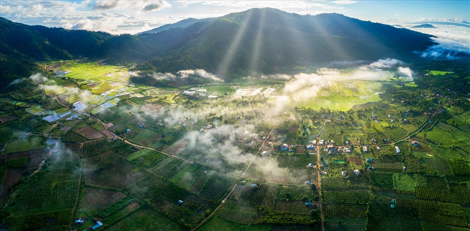
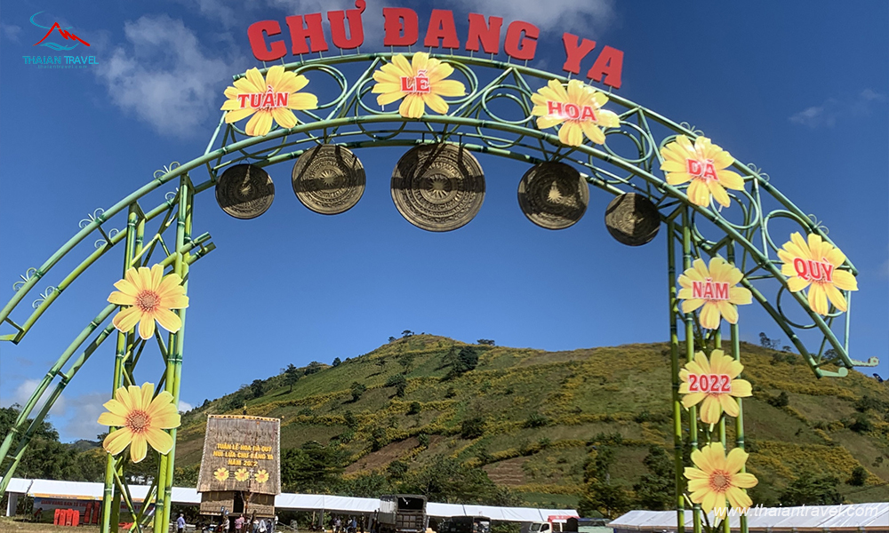

Nguồn gốc tên gọi:
Theo tiếng Jrai, “Chư” có nghĩa là núi, “Đăng Ya” là củ gừng dại. Tên gọi này bắt nguồn từ hình dáng đặc biệt của ngọn núi khi nhìn từ trên cao.

Tên gọi Chư Đăng Ya không chỉ phản ánh hình dáng địa hình mà còn thể hiện nét văn hóa gắn bó của đồng bào bản địa với thiên nhiên Tây Nguyên.
Nguồn gốc hình thành núi lửa Chư Đăng Ya:
Núi lửa Chư Đăng Ya được hình thành từ hoạt động phun trào núi lửa cách đây hàng triệu năm. Sau khi ngừng hoạt động, dung nham nguội dần, tạo nên lớp đất bazan màu mỡ, rất thuận lợi cho nông nghiệp.
Trải qua thời gian dài, các tác động tự nhiên đã tạo nên hình dáng miệng núi lửa đặc trưng, trở thành một thắng cảnh độc đáo của tỉnh Gia Lai.

⬅ Trang chủ